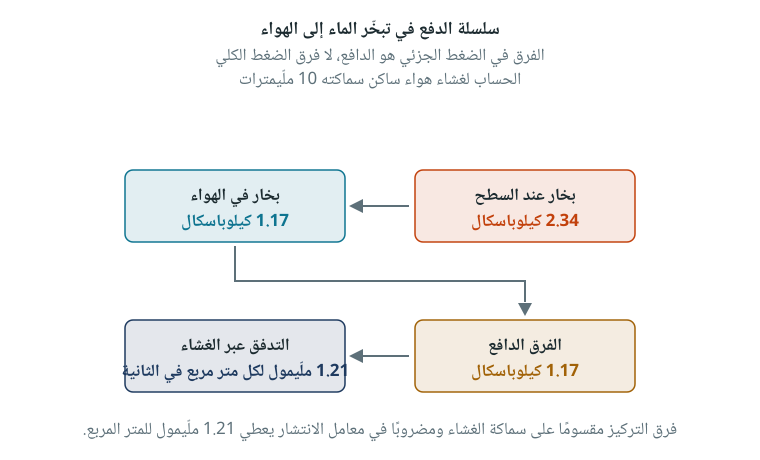

انتقال الكتلة
Mass Transfer
انتقال مكوّن داخل خليط بدافع فرق التركيز أو الضغط الجزئي، يوصَف بقانون فِك ومعامل انتشار، ويحدّد سرعة التجفيف والامتزاز والتقطير.
انتقال الكتلة حركة مكوّن من موضع إلى آخر داخل خليط، دافعها فرق في الكمون الكيميائي يظهر عمليًّا كفرق تركيز أو فرق ضغط جزئي. تسير الحركة من الموضع الأعلى تركيزًا إلى الأدنى، ولو كانت حركة الجزيئات نفسها عشوائية في الاتجاهين.
الوصف الأساسي هو قانون فِك الأول: التدفق المولي لكل وحدة مساحة يتناسب مع تدرّج التركيز، ومعامل التناسب هو معامل الانتشار D. وحدة D متر مربع لكل ثانية، وهي خاصية للزوج المنتشر في وسطه وتتغيّر مع الحرارة والضغط. في الغازات تبلغ D نحو 10⁻⁵ m²/s، وفي السوائل 10⁻⁹ m²/s، وفي الأجسام الصلبة أقل من ذلك بمراتب.
في التطبيقات الهندسية لا يكون الوسط ساكنًا، فالحركة الجماعية للحمل تقلّص سماكة الطبقة الساكنة عند السطح. لذلك يُستبدل الانتشار الجزيئي بمعامل انتقال كتلة k_c يحمل وحدة مقلوب السرعة، m/s، ويُضرب في فرق التركيز بين الكتلة السائبة والسطح.
كيف تعمل الظاهرة؟
تتحرك الجزيئات في الغاز بسرعات حرارية عالية في مسارات حرة قصيرة، ولا يوجد تدفق صافٍ إلا إذا اختلف عدد الجزيئات المتحركة في اتجاهين. حين يكون التركيز أعلى في موضع، يعبر من ذلك الموضع عدد أكبر مما يعبر إليه، فيظهر تدفق صافٍ من غير أن تكتسب الجزيئات سرعة منتظمة. تصادم الجزيئات مع بعضها يحدّ من المسافة التي تحملها هذه الذاكرة التركيبية، ويسمّى معدل انتشارها D. عند السطح، يشكّل السائل أو الصلب طبقة ساكنة يُخترقها الانتشار وحده، ويقاوم الحملُ البعيد تبريدَها بالخلط.
العلاقة بالأرقام
معامل انتشار بخار الماء في الهواء 2.42×10⁻⁵ m²/s عند 20 °م، ويرتفع إلى 3.99×10⁻⁵ m²/s عند 100 °م، أي 1.65 ضعفًا مقابل زيادة 1.27 في الحرارة المطلقة. وفي غشاء هواء ساكن سماكته 10 مم وفرق تركيز 0.5 mol/m³ يكون التدفق J = D·ΔC/L = 2.42×10⁻⁵ × 0.5 ÷ 0.01 = 1.21×10⁻³ mol/(m²·s). أما في الحمل فمعامل التبخّر من سطح ماء يجري عليه هواء بسرعة 0.5 m/s هو 25 + 19×0.5 = 34.5 kg/(m²·h)، وهو أكبر بمرات من الانتشار الجزيئي وحده.
مفاهيم متقاربة
الخلط الأول بين الانتشار والتدفق الجماعي: الانتشار حركة نسبية بين المكوّنات، والتدفق الجماعي حركة الخليط كله، وقد يسير المكوّن في اتجاه معاكس لانتشاره إذا كان الوسط يتحرك. الثاني بين معامل الانتشار ومعامل انتقال الكتلة: الأول خاصية مادية بوحدة m²/s لا تعتمد على هندسة النظام، والثاني رقم هندسي بوحدة m/s يعتمد على السرعة والهندسة. الثالث أن التدفق ليس سرعة: وحدة التدفق كمية لكل مساحة لكل زمن، ويمكن أن يكون صغيرًا مع سرعات جزيئية عالية جدًّا. الرابع أن انتقال الكتلة لا يبدأ بفرق ضغط كلي، بل بفرق في التركيب عند الضغط نفسه.
حدود التطبيق
قانون فِك مكتوب لزوج واحد في وسط، ويفشل في المخاليط متعددة المكوّنات حيث يتنافر كل مكوّن مع الآخرين، ويحتاج هناك إلى معادلات ماكسويل–ستيفان. وفي المسام الدقيقة حين يقترب قطر المسام من المسار الحر للجزيء يصبح تصادم الجزيء بالجدار أهم من تصادمه بغيره، فيسود انتشار نودسن الذي يعتمد على الضغط لا على التركيز. وقرب النقطة الحرجة يتفاوت D تفاوتًا حادًّا. وأخيرًا، في الأنظمة غير المستقرة يسري قانون فِك الثاني، ولا تكفي المقاومة الخطية لحساب زمن الاختراق.

| الكمية | القيمة | المصدر |
|---|---|---|
| معامل انتشار بخار الماء في الهواء عند 20 °م | 2.42×10⁻⁵ متر مربع/ثانية | [1] |
| المعامل نفسه عند 100 °م | 3.99×10⁻⁵ متر مربع/ثانية | [1] |
| التدفق عبر غشاء ساكن 10 مم مع ΔC = 0.5 mol/m³ | 1.21×10⁻³ مول/(متر مربع·ثانية) | [1] |
| معامل التبخّر عند سرعة هواء 0.5 m/s | 34.5 كيلوغرام/(متر مربع·ساعة) | [2] |
| ضغط بخار الماء المشبع عند 20 °م | 2.34 كيلوباسكال | [3] |
المصادر
- 1 Air — Diffusion Coefficients of Gases in Excess of Air — The Engineering ToolBox. www.engineeringtoolbox.com/air-diffusion-coefficient-gas-mixture-temperature-d_2010.html · اطُّلع عليه 2026-11-16
- 2 Evaporation from a Water Surface — The Engineering ToolBox. www.engineeringtoolbox.com/evaporation-water-surface-d_690.html · اطُّلع عليه 2026-11-16
- 3 Liquids — Vapor Pressures — The Engineering ToolBox. www.engineeringtoolbox.com/vapor-pressure-d_312.html · اطُّلع عليه 2026-11-16
استشهد بهذا المصطلح
الصيغتان مبنيتان من بيانات الصفحة نفسها: العنوان والتاريخ ورابط النسخة المنشورة.
انتقال الكتلة — Mass Transfer. (2026). ديوان المعرفة — انفراد. https://infiradev.com/diwan/terms/mass-transfer.html
@misc{mass-transfer2026,
title = {انتقال الكتلة},
titleaddon = {Mass Transfer},
howpublished = {{ديوان المعرفة — انفراد} — مرجع علمي عربي},
year = {2026},
url = {https://infiradev.com/diwan/terms/mass-transfer.html},
urldate = {2026-11-16},
note = {مراجعة علمية: مراجعة آلية — ديوان المعرفة (روابط المصادر + عقد المحتوى + وجود الرسم) 2026-11-16}
}
راجعه: مراجعة آلية — ديوان المعرفة (روابط المصادر + عقد المحتوى + وجود الرسم) 2026-11-16 · 2026-11-16 · آخر تحديث 2026-11-16